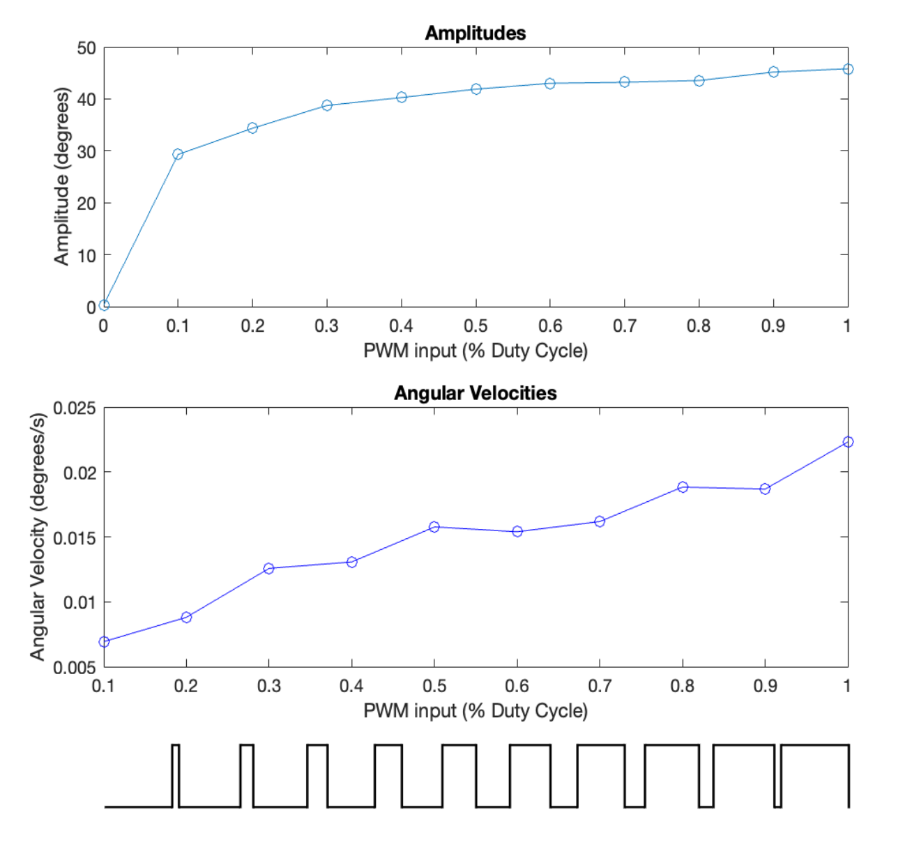

Skills: Circuit Design, Circuit Debugging, SolidWorks, Onshape, Arduino, Rapid Prototyping, Sensor Integration, Test Design, Quantification, MATLAB, Soldering, Leadership
About this project: As an undergraduate researcher in the Carnegie Mellon University Micro Robotics Lab (MRL), I worked independently on a new project designing, prototyping, and testing small fish-like robots. Over the course of three months, I designed and constructed a bioinspired actuator designed to mimic a fish's caudal fin.
The actuator, when integrated with MRL-designed whisker-like flow sensors, has inertia-based turning capability to respond autonomously to relative force inputs underwater. This mimics the lateral line system that many fish species use to achieve coordinated behaviors, such as schooling.
Actuator Design Process: Since I was tasked with creating all of the systems contributing to my actuator, my design process went through many stages.
Quantification and Conclusions: After processing high speed camera footage using a Segmentation Tracking algorithm and visualizing the data using MATLAB, I determined that my actuator achieved inertia-based turning based on two programmed inputs, allowing for future flow sensor integration and autonomy.
What I learned: Beyond technical experience, contributing to this project taught me the leadership skills necessary to lead a design process independently. Having designed and manufactured the actuator myself, I understand the relationship between good mechanical and electrical design for a system. Ultimately, the most important lesson I learned is that I intend to continue doing research.
Sample test clip (left) and corresponding segmentation tracking output (right), tracking black dots on fin, as graphed in MATLAB.
Graph demonstrating relationship between programmed PWM inputs (in this case the two inputs are equal) and the angular velocity and amplitude of the actuator. PWM signal visualization is included for clarity along the x-axis.